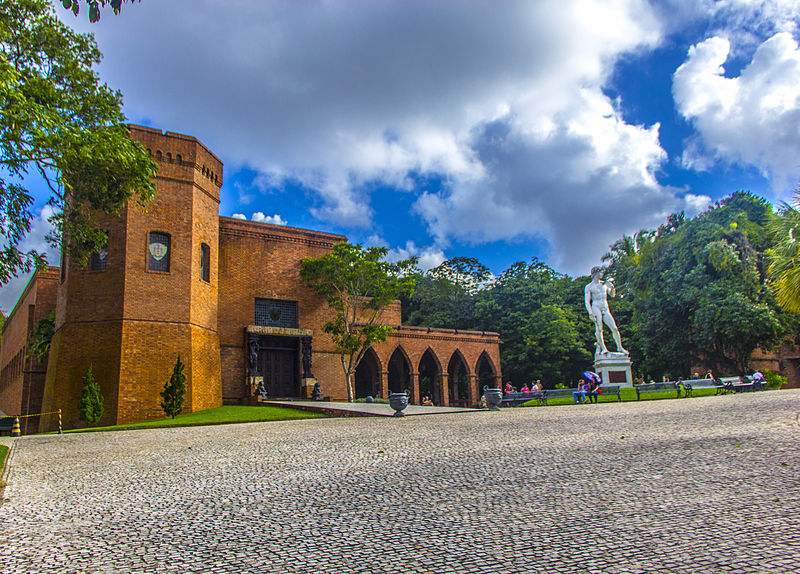

Instituto de Ricardo Brennand
Também conhecido como Castelo de Brennand, o Instituto Ricardo Brennand é o único ponto turístico trazido por este site de viagem que não fica no Recife Antigo. Mas vale muito a pena o deslocamento até o local. Ele foi eleito o melhor museu da América do Sul pelo TripAdvisor. O espaço fica em uma reserva de Mata Atlântica, mais afastada da cidade, em um bairro chamado Várzea, bem próximo à Universidade Federal de Pernambuco, a mais ou menos 14 km do centro. Logo na entrada, você será recepcionado com um conjunto de palmeiras imperiais impressionantes. Uma réplica de um castelo medieval abriga exposições fixas de peças da Idade Média: móveis, tapetes, acessórios, roupas de combate, livros raros, obras de arte. O destaque é para o Museu de Armas, oficialmente o Castelo São João, com uma extensa coleção de armas brancas, como espadas, canivetes e punhais, alguns até cravejados com pedras preciosas. A pinacoteca abriga exposições fixas e temporárias.Gosto particularmente da coleção de armaduras de ferro das épocas medievais e das caixas de música do começo do século 20. Aos finais de semana, o Instituto tem várias atividades como festivais de música, oficinas, amostras, ópera, concertos clássicos entre outras programações. Vale muito a pena ir, mesmo sendo bem distante do centro. De carro, utilize o GPS, pois você terá que pegar um trecho da BR-101. Nada difícil, mas é uma região nada turística de Recife. E reserve a tarde inteira (não abre de manhã) para o espaço, assim você curte tudo com calma.
- Instituto de Ricardo Brennand
- Funcionamento: fecha às segundas. Terça a domingo, das 13h às 17h.
- A última terça-feira do mês é gratuita.
- A última terça-feira do mês é gratuita.
- Preço do ingresso: R$ 30 (adulto), R$ 15 (meia).